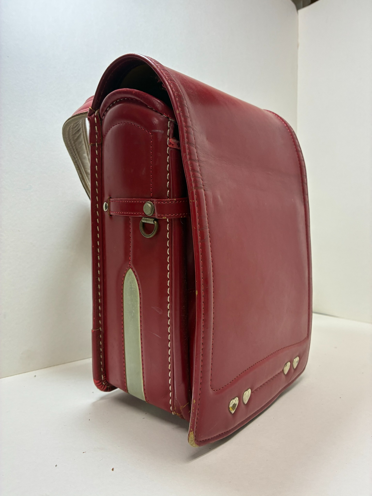
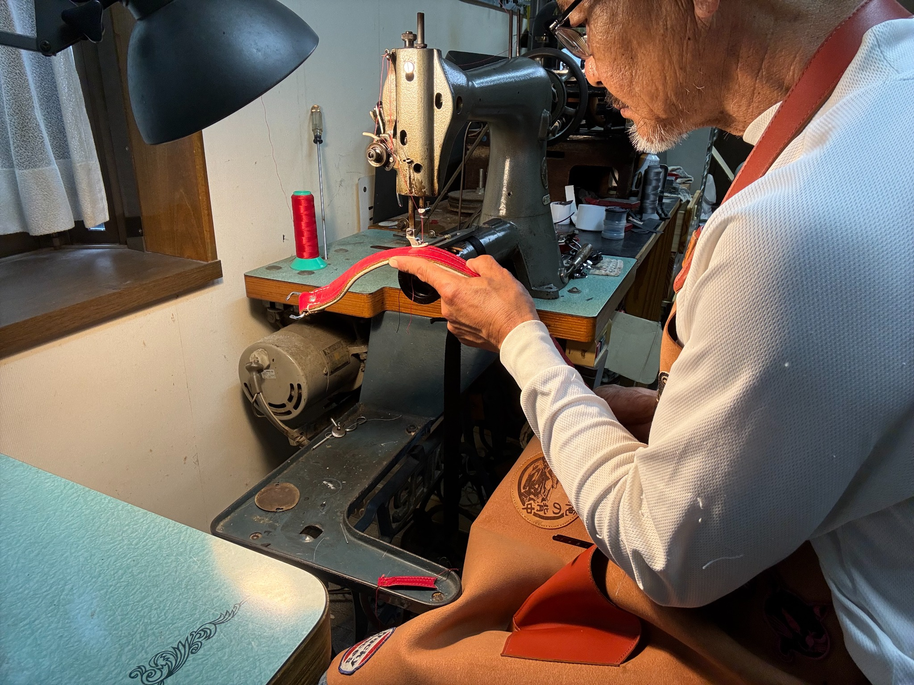
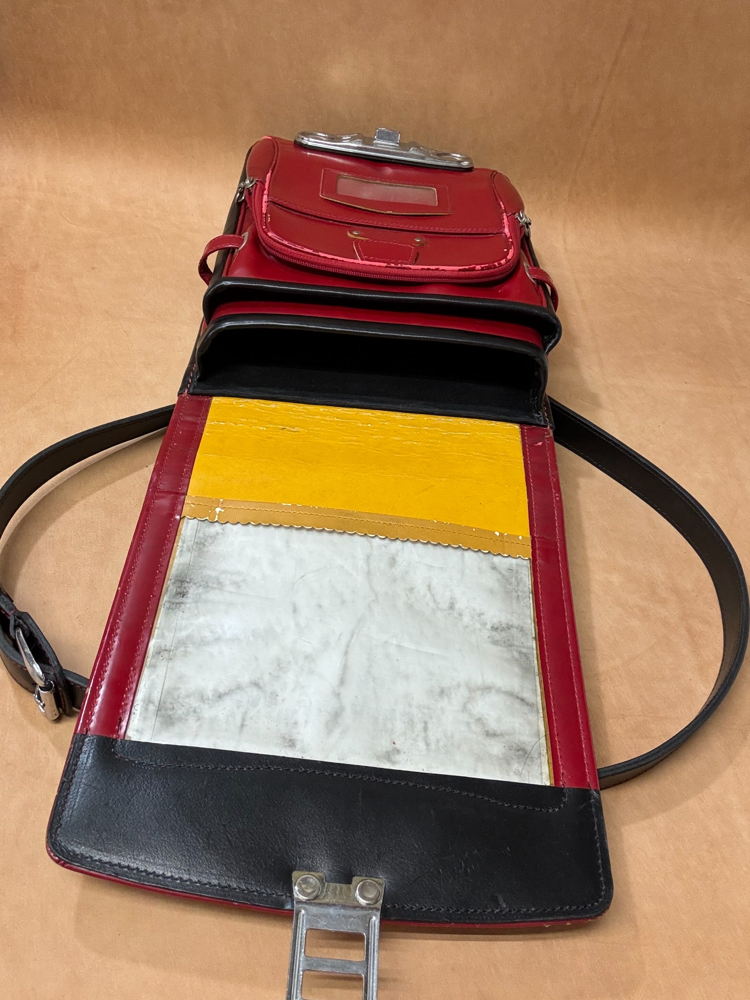
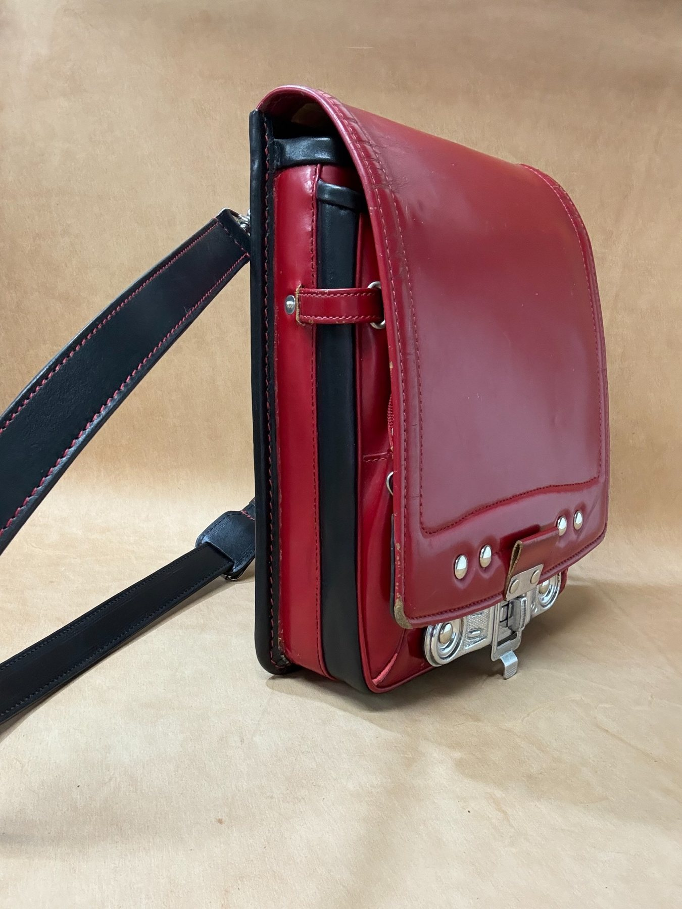
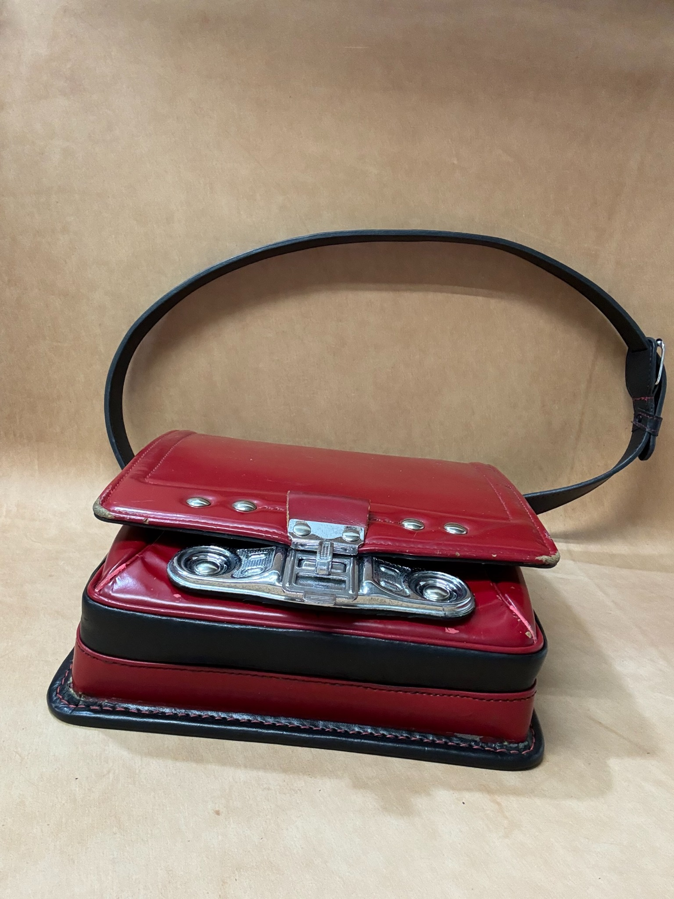
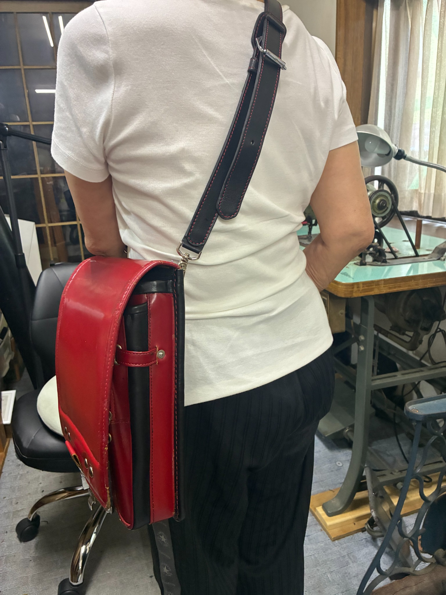
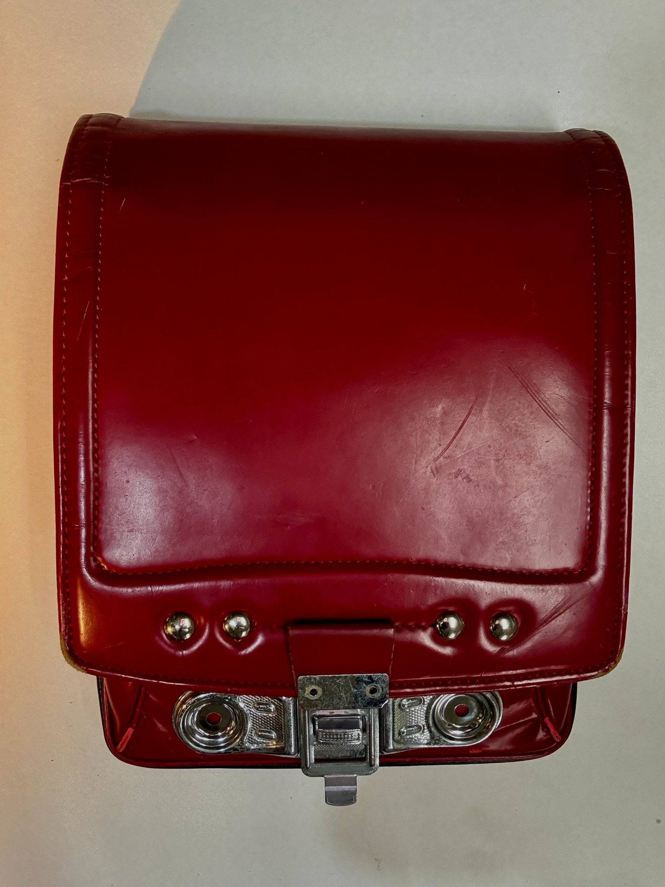

Before
6年間使ったランドセル。傷も思い出として残します。
6年間をともにしたランドセルを、これから先も使える革バッグへ。一点ずつ丁寧に仕立てます。
ただ小物に分けるだけではなく、ランドセルらしさを残しながら、大人が持てる革バッグへ仕立てます。傷や色つやも、6年間の大切な記録として活かします。

池戸かばん工房は、親の代から続く革工房です。古いミシンと手仕事で、長く使える革製品を仕立てています。修理のご相談も承ります。
元のランドセルの面影を残しながら、普段使いできるショルダーバッグへ。

6年間使ったランドセル。傷も思い出として残します。

ランドセルの特徴を見ながら、使える部分を選びます。

大人が持てる革バッグへ。毎日使える形に仕立て直します。

ランドセルらしい金具や表情を残して仕上げます。

サイズ感が分かるよう、実際に肩掛けした姿も確認できます。

縫い目、コバ、金具の収まりまで確認しながら制作します。
ランドセルの状態・仕様・金具交換の有無により、制作前にお見積りします。
普段使いしやすい定番。
親への贈り物にも。
仕様により相談。